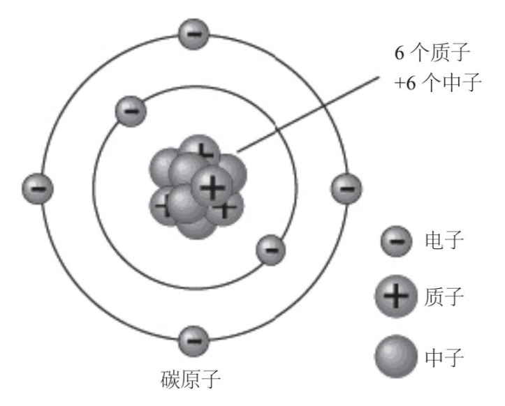
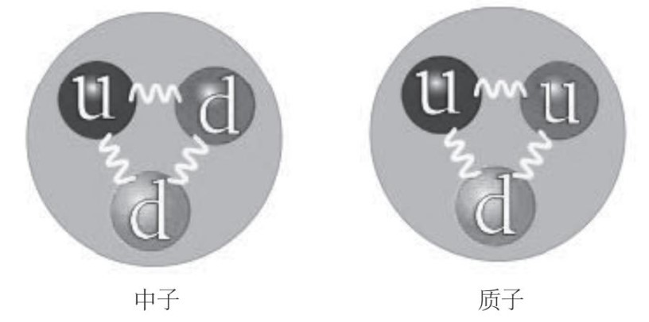
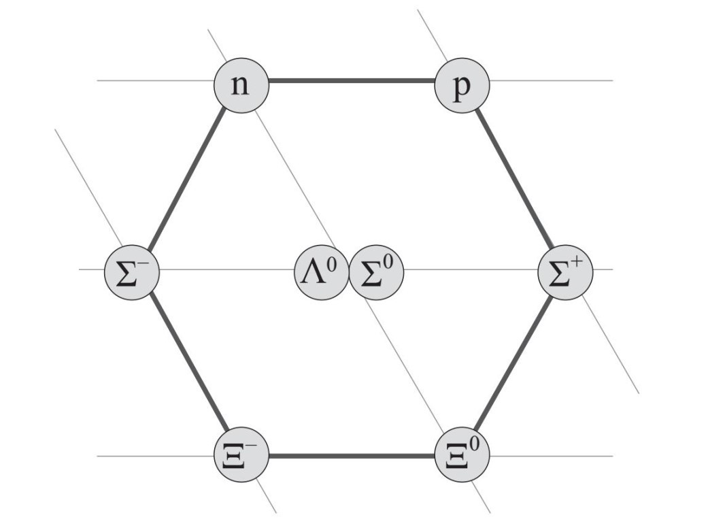

怎样才能成为一个数学研究者呢？我觉得方法多种多样，下面我就与大家分享一下我的经历。
其实，在上学时我讨厌数学，这个情况可能出乎你的意料。“讨厌”这个说法也许有点儿夸张，但至少当时我不喜欢数学。在我看来，数学太枯燥了，虽然学数学对我而言并不难，不过我真的不明白为什么要学数学。在课堂上学习的那些东西似乎毫无意义，也看不出有什么实际用途。而且，我还以为学校教给我们的这些就是数学的全部内容了。我真正感兴趣的学科是物理，特别是量子物理。只要有机会，我就会如饥似渴地阅读物理方面的科普读物。我是在俄罗斯长大的，在俄罗斯找到这类书并不太难。
量子世界真是让我心旷神怡！自古以来，科学家和哲学家就有一个梦想，希望能描述宇宙的本质。有人甚至还提出假说，猜测所有物质都是由一种叫作原子的微小成分构成的。20世纪初，人们证明原子确实存在。但几乎在同一时间，科学家发现，每个原子还可以再分解。原来，原子都是由位于其中心的原子核和围绕原子核旋转的电子构成的，而原子核又是由质子和中子构成的。这种结构可以用下面这幅图来表示：

那么，质子、中子和电子又是由什么构成的？结果，我在那些科普读物中找到了答案：它们都是由“夸克”（quark）这种基本粒子构成的。
我非常喜欢“夸克”这个名字，特别是这个名字的由来。首先提出这个概念的物理学家默里·盖尔曼（Murray Gell-Mann）是从詹姆斯·乔伊斯（James Joyce）的小说《芬尼根的守灵夜》（Finnegans Wake）中借用了这个名字。在那部小说里，有这样一首模仿诗：
冲马克先生叫三声夸克！
他肯定没有从叫喊声中听到什么，
因为他听到的都是毫不相干的内容。
一位物理学家在考虑为一种粒子命名时，竟然从小说中寻找灵感，而且还是《芬尼根的守灵夜》这样一部异常复杂的巨著。我觉得这实在是太特别了。当时，我大约13岁。在我看来，科学家都是不谙世事的怪物。他们离群索居，埋头钻研，对诸如人文艺术等生活的其他方面没有丝毫兴趣。而我的生活却不是这样。我有很多朋友，我喜欢阅读，我不仅对自然科学感兴趣，还有很多其他爱好。我爱踢足球，经常跟朋友们在球场上纵情奔跑，一踢就是好几个小时。在我为“夸克”着迷的同时，我还第一次感受到了印象派绘画的魅力（父亲的藏书中有一本介绍印象派的大部头，它为我打开了这扇迷人的窗户），甚至还拿起画笔亲自尝试了一番。正是因为我的爱好很多，所以此前我一直怀疑自己可能并不适合成为一名科学家。然而，当看到盖尔曼这位伟大的物理学家、诺贝尔奖得主，竟然也兴趣广泛（不仅对文学，还对语言学、建筑等领域感兴趣），我非常开心。
盖尔曼认为，夸克有两种不同类型，即“上夸克”（up，下图中表示为u）和“下夸克”（down，下图中表示为d）。如果两种类型的夸克以不同的比例混合在一起，其构成的中子和质子就具有不同的特性。如下图所示，中子由两个下夸克和一个上夸克构成，而质子则由两个上夸克和一个下夸克构成。

这个理论猜测质子与中子并非一个个不可见的粒子，而是由更小的块状结构堆砌而成的。理论本身虽然没有一点儿含糊之处，但是物理学家是如何促使这一理论形成的，人们却并不清楚。
事情的缘起要追溯到20世纪50年代末。当时，人们发现了大量明显是基础粒子的强子。中子与质子都是强子，它们作为构成物质的“砖石”，在日常生活中自然起到了非常重要的作用。至于其他强子，却没有人清楚其存在的意义。（一位研究人员说：“是谁为这些强子分类排序的呢？”）强子的种类非常多，就连沃尔夫冈·泡利（Wolfgang Pauli）这位颇具影响力的物理学家也开玩笑说，物理学都要变成植物学了。为了探寻强子发生变化的基本原理，解释强子疯狂裂变的根本原因，物理学家们迫切地需要掌控住这些强子。
盖尔曼与尤瓦勒·内埃曼（Yuval Na’eman）各自提出了一种新颖的分类方案。在他们的方案中，他们都认为强子可以自然地分裂成更小的族系，每个族系由8个或10个粒子构成，分别称作“八重态”和“十重态”。在这些族系中，所有的粒子都具有相似的属性。
在我当时阅读的那些科普读物中，著者用下图来表示八重态的结构：

在这幅图中，质子被记作p，中子被记作n，另外还有6个粒子，它们各有一个奇怪的名字，都用希腊字母表示。
为什么每个族系中的粒子数目都是8个或10个，而不是7个或11个呢？我在那些书里没有找到统一的合乎逻辑的解释。虽然书中都提到一个由盖尔曼提出的神秘理论，名为“八重道”（暗指佛教中的“八正道”），但却根本没有解释该理论到底讲的是什么。
由于缺少解释，我反而被激起了更强的好奇心。该理论的关键部分到底是什么不得而知，因此，我希望解开这个谜，但却无从下手。
幸运的是，我家人的一位朋友伸出了援助之手。我是在一个名叫科诺姆纳的工业小镇长大的。小镇有15万人口，离莫斯科大约70英里（约为112.654公里），乘火车大约需要两个小时。我的父母是工程师，在一家制造重型机械的大企业工作。科诺姆纳位于两条河流的交汇处，是一座古老的小镇，建于1177年，比莫斯科的建成仅晚了30年。科诺姆纳现在仍有几座保存完好的教堂，与旧城墙一起，见证了小镇的历史。但是，这个小镇谈不上教育与学术中心，只有一所规模不大的大学，为当地学校培养老师。但是，这所大学里有一位名叫叶夫根尼·叶夫根尼耶维奇·彼得罗夫（Evgeny Evgenievich Petrov）的教授，他是我父母的好朋友。一天，我母亲在街上遇到了这位教授。因为很长时间没见面，他们就交谈起来。母亲喜欢与她的朋友谈论我的事情，当叶夫根尼·叶夫根尼耶维奇听说我对科学感兴趣时，他说：“我得见见他，我想让他把兴趣转到数学上来。”
“哦，不行啊，”母亲说，“他觉得数学很枯燥，所以不喜欢数学。他希望学习量子物理。”
“不用着急，”教授说，“我有办法让他改变主意。”
于是，他们就安排了我们的见面。虽然我对这次见面并不是非常热心，但我还是去了他的办公室，见到了叶夫根尼·叶夫根尼耶维奇。
那时候，我快满15岁了，正在读九年级，即将升入高中。（我跳过一级，比同班同学小一岁。）叶夫根尼·叶夫根尼耶维奇当时40岁出头，非常友好，也没什么架子。他戴着一副眼镜，满脸胡茬儿，与我心中的数学家形象没什么两样。但是，他的眼睛很大，看人时目光锐利，仿佛他对周围所有的事物都充满了好奇心，这让我觉得他颇有几分魅力。
事后看来，叶夫根尼·叶夫根尼耶维奇确实有好办法，可以让我把兴趣转移到数学上。我一进他的办公室，他就问我：“我听说你喜欢量子物理，对吗？那你听说过盖尔曼的八重道与夸克模型吗？”
“是的，我在几本科普读物中读到过。”
“但是你知道他建立这个模型的基础是什么吗？盖尔曼又是怎么想到这些的呢？”
“这个……”
“你听说过SU(3)群吗？”
“SU……什么？”
“如果你不知道SU(3)群，怎么可能理解夸克模型呢？”
彼得罗夫教授从书架上取下几本书，打开后，让我浏览了几页。上面满是各种各样的公式，我看到了熟悉的八重态图，就像前文提到的那幅图一样。但是，这些图中并不只有一个个漂亮的图形，旁边似乎还有合乎逻辑的详细解释。
虽然这些公式让我有点儿摸不着头脑，但是我立刻明白过来，这些公式不就是我一直在苦苦寻找的答案吗？这一刻，我看着这些公式，听着教授的话，仿佛被催眠了一样。我的心中突然产生了一种前所未有的悸动。这种感觉无法用语言形容，但是我能感觉到那股冲击力，就像听到一段让人无法忘却的美妙音乐、看到一幅空前绝后的画作时那样激动。我彻底被征服了，心里不禁惊叹一声：哇！
“你可能以为学校教的那些东西就是数学吧？”叶夫根尼耶维奇摇了摇头，他指着书中的公式说，“你错了，这些才是数学。如果你真的想要了解量子物理，就应该从这里开始。盖尔曼用美妙的数学理论证明了夸克的存在，事实上它应当是数学领域的一个发现。”
“但是我怎么才能学会这些东西呢？”
这些公式之类的东西看上去深奥得吓人。
“别着急，你首先要学习‘对称群’的概念。对称群非常重要，理论物理与数学的大部分内容都建立在对称群的基础之上。我希望你能读一读这几本书，你现在就可以开始阅读，遇到不懂的地方，做个标记。我们每周在这里见面，讨论你读过的内容。”
他递给我几本书。其中一本介绍了对称群，另外几本涉及不同的内容，包括p进数（与我们习惯的数字体系截然不同的一套数字）与拓扑学（几何图形最基本特征的研究）。叶夫根尼耶维奇的眼光极为精准，他挑选的这几本书，可以帮助我从不同侧面去了解数学这头神秘的怪兽，并对它产生浓厚的兴趣。
我们在学校学过二次方程式，也学过一点儿微积分知识，还学过欧几里得几何学的基础知识和三角学。我一直以为，数学的核心内容无非就是这些，可能有一些更加复杂的难题，但都不会跳出我熟悉的这个总体框架。但是，叶夫根尼耶维奇给我的这几本书，却让我窥探到一个截然不同的数学世界，一个完全超乎我想象的数学世界。
我的兴趣几乎瞬间就被转移到数学上了。